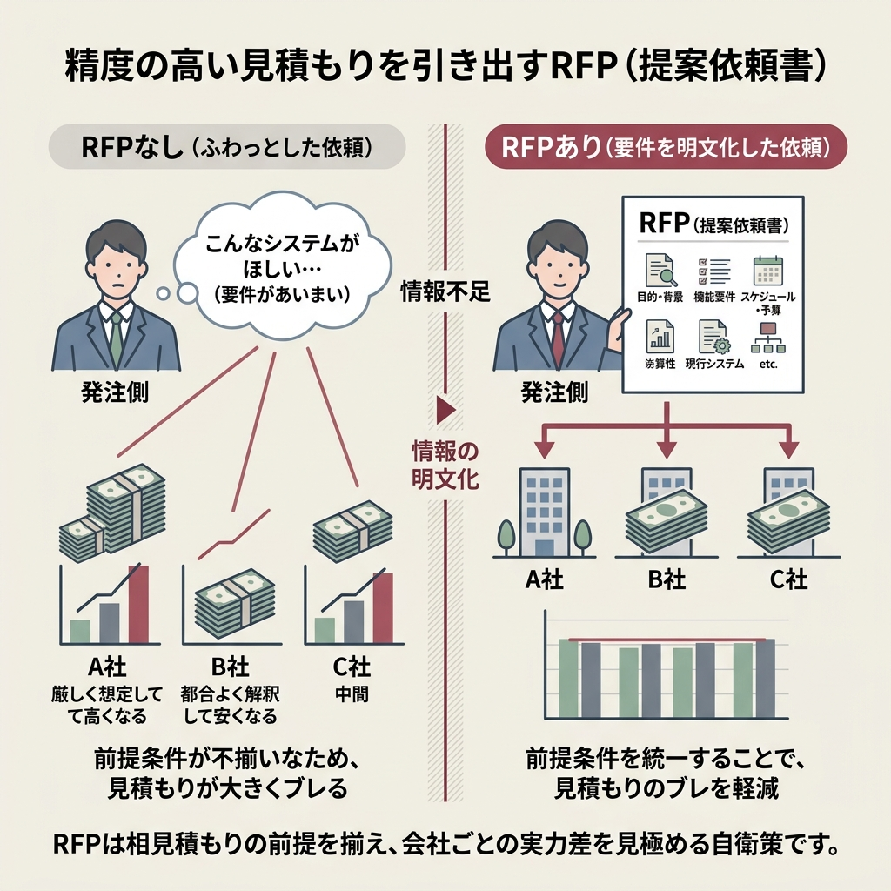
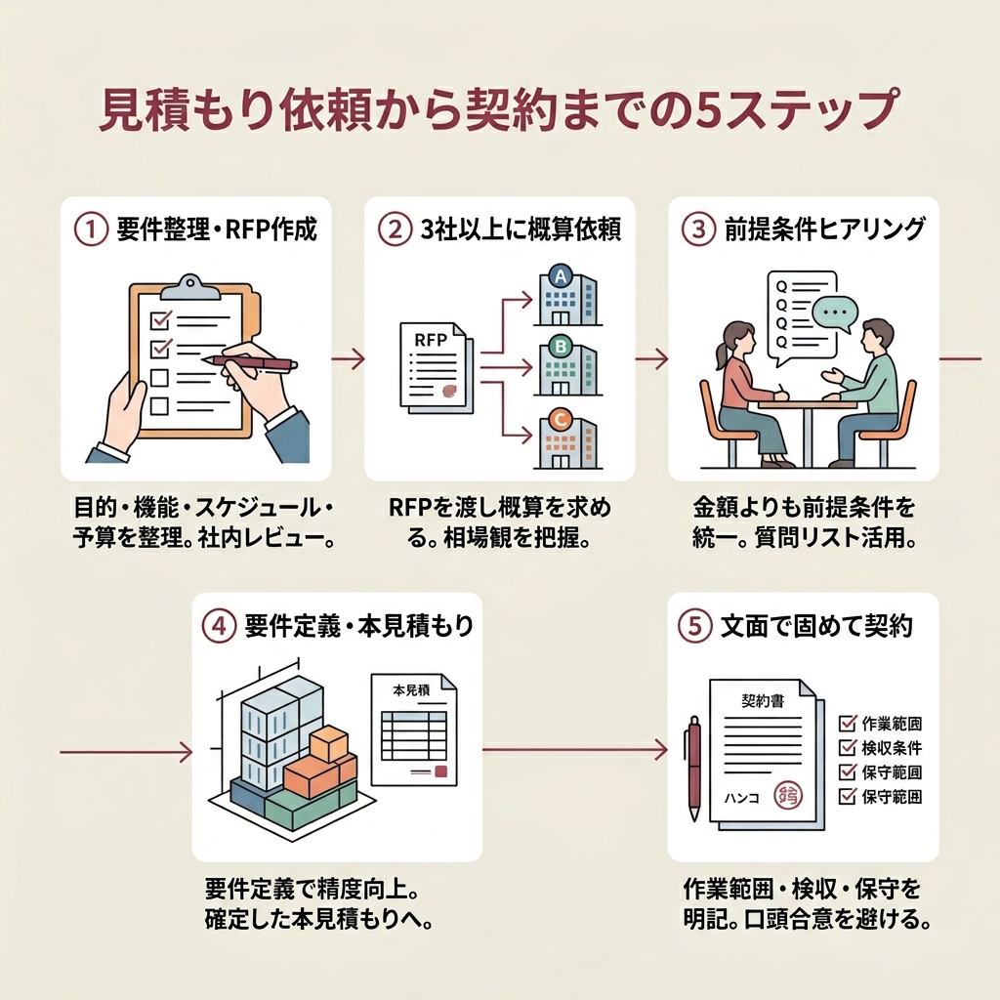

システム開発の見積書を初めて受け取った担当者の、ほぼ全員がぶつかるのが「この金額、妥当なのか判断できない」という壁です。
数字の根拠、項目名の意味、抜けている工程の見分け方。どれも現場経験がないと輪郭すら掴みづらい領域です。
この記事では、発注ナビ・Sun*・IPA・マイナビTechTus・マネーフォワード・秋霜堂といった一次情報に当たった上で、見積もりを読み解くための「最小限だけどちゃんと使える知識」を実務順に並べ直しました。
算出方法の選び方から、RFPの型、相見積もりで詰まりがちな落とし穴まで、発注前日に通しで読むつもりで書いています。
- システム開発の見積もりが「なぜ会社ごとに金額が違うのか」の理由
- 類推・係数モデル・ボトムアップ・プライスツーウィンの4つの算出方法と使い分け
- 見積書に並ぶ10項目の中身と、抜けやすい工程の見抜き方
- RFPの作り方と相見積もりで失敗しないためのチェック項目
3社から見積もりをもらったんですが、金額がバラバラで。どれを選べばいいのか分からなくて困っています。
金額差が出るのは珍しいことじゃないんです。まずは算出方法と内訳の粒度をそろえて並べることが出発点になります。
システム開発の見積もりとは？3分でわかる全体像
システム開発の見積もりとは、契約に必要な経費や取引条件を書面にまとめたものです。
ざっくり言えば「このシステムを作るのに何人が何か月関わって、いくらになるか」を先に合意するための書類です。
発注者が一番知りたいのは最終金額ですが、プロ側が見せたいのは工程ごとの内訳です。両者がかみ合わないと、最初の一歩でつまずきます。
見積もりが複雑になる3つの理由
金額差が当たり前に発生する背景には、見積もりという仕組みそのものが抱える性質があります。
同じシステムを依頼しても、会社が変われば金額の桁が動くことすらあります。原因を整理するとだいたいこの3つに集約されます。
- 開発方法（スクラッチ／パッケージ／クラウド）によって工程自体が変わる
- 会社ごとにエンジニアの単価・スキル・下請け構造が違う
- 同じ「設計」でも対象範囲の切り方が会社ごとに違う
概算見積もりと本見積もりは別物です
多くの開発会社は、見積もりを2段階で出します。
前半は「ざっくりいくら？」に答える概算見積もり、後半は要件定義の後に出る本見積もりです。
この順番を知らずに概算を握り締めて稟議に上げると、後で金額がずれたときに発注側が振り回されます。最初から2段階であることを前提に進めましょう。
そもそもなぜ会社ごとに金額が違うのか
結論は「前提条件と積み上げ方が違うから」です。
同じKWを与えても、要件を詰める粒度、リスクの織り込み方、管理工数の取り方が各社で違います。
つまり見積もりの読み解きは、金額を並べる前に「何を前提にいくらと言っているか」をそろえる作業から始まります。

見積もりの算出方法は大きく4種類。特徴と向き不向きを整理
最初に押さえておきたいのが、開発会社が使う見積もり算出の型です。
発注ナビやマイナビTechTusの解説を総合すると、現場でよく使われるのは主に4種類。まずは比較表で全体像をつかみましょう。
| 算出方法 | 強み | 弱み |
|---|---|---|
| 類推見積（トップダウン） | 過去事例から素早く出せて精度も比較的高い | 類似事例がないと使えない |
| 係数モデル（パラメトリック見積） | 担当者のスキルに左右されにくい | 蓄積データが少ないと精度が落ちる |
| ボトムアップ（工数積上げ） | 工程ごとに抜け漏れが出にくく精度が高い | 大規模案件では工数読みが重くなる |
| プライスツーウィン法 | 予算の過不足が起こりにくい | 予算ありきで機能不足になりやすい |
類推見積（トップダウン）は「似た案件があるか」で決まる
類推見積は、過去の類似プロジェクトを参考に金額を当てはめていく方法です。
開発会社の手元に似た事例があれば、スピードも正確性もバランスよく出せます。逆に事例がないと使えない、という前提だけ頭に置いておきましょう。
係数モデル（パラメトリック見積）は数式で弾く
ひとことで言えば、数式で機械的に見積もる方式です。
「製品を1つ作るのにかかるコスト」など過去データから単位あたりの係数を出し、そこに数量を掛けて全体金額を出します。
担当者の経験値に結果が左右されにくいのが強みで、大量の案件データをもつ会社ほど精度が上がります。
一方で、手元のサンプル数が足りない会社に任せると、数式の根拠が薄くなって数字が現実離れしやすいので注意が必要です。
ボトムアップ（工数積上げ）は抜け漏れが出にくい
とにかく精度を上げたいときに選ばれるのがボトムアップです。
完成させたいシステムを構成要素に分解して、作業ひとつひとつに工数を振って積み上げていくイメージです。見積書を眺めたとき項目が細かい場合は、だいたいこの方式が使われています。
ただし、大規模プロジェクトになるほど工数を読み切るのが難しくなり、作業時間もそれなりにかかるのは承知しておきましょう。
プライスツーウィン法は「予算ありき」の方法
プライスツーウィン法は、発注者の予算に合わせて開発会社が中身を調整していく方法です。
「予算◯◯万円で収めたい」という制約が固い場合に便利ですが、予算に機能を合わせにいくぶん、機能不足が起こりやすくなります。
1つの会社で4つの方式を全部使うわけではないんですね？
その通りです。概算段階では類推、要件定義の後はボトムアップ、という組み合わせがよく見られる形です。

見積書の主な10項目と、その中身
開発会社から届く見積書には、発注ラウンジやマイナビTechTusの解説で共通して挙がる10の費用項目があります。
項目名が並ぶだけだと差が見えにくいので、それぞれ「何のために発生するか」を短めに整理しました。
| 項目 | 中身の概要 |
|---|---|
| 要件定義費用 | ほしいシステムの要望をまとめ、方針と仕様を決めるための費用 |
| 設計費用 | サーバー・言語など設計環境を整える費用 |
| UIデザイン費用 | ユーザーから見える画面の設計にかかる費用 |
| 進行管理費用 | スケジュール管理・ディレクションにかかる費用 |
| 開発費用 | エンジニアの技術費・人件費で、見積もりの主役 |
| 導入費用 | 完成後の初期設定にかかる費用 |
| 導入支援費用 | マニュアル作成や操作説明会のための費用 |
| 購入費用 | ソフトウェア・サーバーなど機材購入の費用 |
| 旅費・交通費用 | 打ち合わせ・出張に伴う費用 |
| 保守費用 | 完成後のメンテナンス・バグ修正・改修の費用 |
見積書の主役は開発費用
システム開発の見積もりは、多くの場合「開発費用＝エンジニア人件費」が最大の項目になります。
ここが総額の大半を占めるので、エンジニアの工数見積もりの前提が崩れると、他の項目が正しくても全体が崩れます。
まずは開発費用の内訳から見始めましょう、というのは多くの解説記事で共通する助言です。
忘れられがちな「運用保守費」は必ず確認
見積書の一番下に小さく書かれがちなのが、運用保守費です。
完成後のバグ修正・機能改修・サーバー監視などにかかる費用で、月額固定で発生するケースが一般的です。
購入費・旅費は項目漏れの定番
開発以外の実費もチェックポイントです。
必要なソフトウェアライセンス、クラウドサービス利用料、遠方なら出張旅費。これらは「当然含まれているだろう」と思い込みやすいので、項目が立っていなければ明示的に質問しておきましょう。
システム開発の費用相場、どう捉えるのが正解か
相場を聞かれるのは見積もりの話でもっとも多い質問です。
結論から言うと、システム開発の相場は「要件の決まり方」次第で大きく変動するため、単純な金額レンジよりも考え方の軸を押さえておくほうが実用的です。
相場の正体は「人月単価 × 工数」
システム開発の費用は、シンプルに言えばエンジニア1人を1か月拘束するといくらかかるか（人月単価）に、必要な人月数を掛けたものです。
人月単価はエンジニアの職種やスキルで変わります。数字だけを鵜呑みにせず、その人がどこまで担当するのかという役割とセットで捉えることが重要です。
大規模になるほど管理費の比率が上がる
規模が大きくなると、純粋な開発人件費以外に、進捗管理・品質管理・ドキュメント整備の工数が跳ね上がります。
小規模案件に比べて全体コストに占める管理費の割合が高くなるのが一般的です。「なんで管理費がこんなに？」と感じたら、規模との釣り合いで判断することが大切になります。
見積書を受け取ったら確認したい8つのチェックポイント
見積書は届いて終わりではなく、そこから中身を読み解く作業が始まります。
発注ラウンジ・秋霜堂・マイナビTechTusといった一次情報で共通して挙げられている観点をまとめると、チェック項目は次の通りです。
- 作業範囲（スコープ）が明確になっているか
- 修正・トラブル対応などリスク分が含まれているか
- 進捗管理・品質管理などの管理工数が計上されているか
- 要件定義の前提となる調査・分析の工数が含まれているか
- 数字に妥当性があるか（根拠を説明できるか）
- 前提条件（開発言語・環境など）が明記されているか
- 必要なハードウェア・ソフトウェアの購入費が含まれているか
- 責任範囲・検収方法・検収条件が明確になっているか
スコープの明確化がすべての出発点
最初に確認したいのは、どこからどこまでを開発範囲とするかです。
「基本設計から運用・リリースまで」なのか、「要件定義から総合テストまで」なのか。範囲が曖昧なまま契約すると、後からの追加発注で費用がスライドしていきます。
管理費・リスク費は「見えない項目」
作業が可視化しづらいため、見積書から抜け落ちやすいのが管理工数とリスク対応費です。
「記載がないから安い」ではなく「記載がないから後で追加請求になる」と解釈するのが安全です。必ず明示を求めましょう。
正直、8項目も見切れる自信がありません。優先順位をつけるとしたら、どれから見ればいいですか？
スコープ・前提条件・責任範囲の3つから始めれば十分です。金額より先に、この3つを複数社で横並びにすると判断材料がぐっと増えます。

「安すぎる見積もり」に潜む3つのリスク
相見積もりをとったとき、1社だけ極端に安いケースが出ることがあります。
秋霜堂の解説では、こうした安すぎる見積もりに共通する危険パターンとして3つが挙げられています。金額が美味しく見えたときほど、このチェックは欠かせません。
開発者のスキル不足で後工程がブレる
人件費を極端に絞るには、単価の低いエンジニアを当てるしかありません。
仕様の解釈ミスが増え、手戻りが発生する確率が上がります。結果として、工期の後半で追加費用が膨らむパターンは珍しくありません。
テスト・レビューを削った「品質の欠如」
安さの裏で真っ先に削られるのが、レビューとテスト工程です。
納品直後は動いて見えても、リリース後に不具合が続出し、修正費用が発注側に降りかかる展開は現場でよく聞く話です。
スコープ欠落で「契約外」を連発される
単純に見積もり範囲を狭くして総額を安くするパターンもあります。
契約後に「この機能は含まれていません」と言われ、追加見積もりで合計が膨らむ流れです。範囲の切り方は金額と同じ重みで比較しましょう。
- リスクバッファが明示されている
- 管理工数・テスト工数が独立項目で記載されている
- 前提条件と対象外業務が言語化されている
- 工程が1〜2行でまとめられて内訳が見えない
- 責任範囲の記述がなく、口頭で合意したことになっている
- 「別途見積もり」という表現が何度も登場する
複数社の見積を比較した時に、1社だけが極端に安い場合などは注意が必要です。追加費用で結果的にコストがかかることも多いほか、粗悪な品質の成果物が納品されたりするケースもあります。
発注ラウンジ「システム開発における見積もりって何をチェックすればいい？」

精度の高い見積もりを引き出すRFP（提案依頼書）の作り方
見積もりの精度は、依頼側が情報をどれだけ整理して渡せるかで決まります。
この「情報の渡し方」を標準化したのがRFP（提案依頼書）で、秋霜堂や発注ラウンジの解説でも必須アイテムとして繰り返し登場する存在です。
そもそもRFPとは何か
RFPとは、発注側が「作ってほしいシステムの要件や条件」を1枚のドキュメントにまとめたものです。
開発会社にとっては、見積もりの前提がそろった唯一の情報源になります。RFPがあるかないかで、見積もりの前提条件の揃い方は大きく変わります。
RFPに最低限書いておきたい項目
秋霜堂の解説によると、RFPに盛り込むべき要素はおおむね次の通りです。
- プロジェクトの目的・背景
- 対象業務・対象ユーザー
- 実現したい機能の一覧
- 必須要件／希望要件の分類
- 想定するスケジュール・予算感
- 現行システムの状況（あれば）
- 評価基準と選定プロセス
RFPがあると見積りのブレが減る理由
RFPを渡すと、開発会社ごとに聞き返す内容の差が小さくなります。
前提条件がそろうため、相見積もりの金額差が「会社の実力差」に近づき、読み解きやすくなります。見積もりの精度を上げたいなら、RFPは発注側の自衛策として一番効きます。

見積もり依頼から契約までの5ステップ
ここまでの流れを時系列で並べるとこうなります。
初めて発注する担当者の頭の中を整理しやすいよう、全体像をステップで示しておきます。
要件を整理してRFPを作る
目的・機能・スケジュール・予算感を1枚に落とし込みます。社内で叩き台を作り、関係部署にレビューしてもらうのがおすすめです。
3社以上にRFPを渡して概算見積もりを依頼する
いきなり本見積もりは求めず、まずは概算段階で方向性を比較します。3社以上に依頼しておくと、相場観の幅を掴めます。
概算見積もりの前提条件をヒアリングする
各社の概算が出たら、金額よりも前提条件をそろえにいきます。質問リストを共通化しておくと、比較しやすくなります。
要件定義を経て本見積もりを受け取る
要件定義フェーズを実施すると、ボトムアップの精度が一気に上がります。本見積もりはここで初めて確定値として扱えます。
責任範囲・検収条件を文面で固めて契約
金額だけでなく、作業範囲・検収条件・保守範囲を文面に落としてから契約します。口頭合意はトラブルの温床です。
相見積もりで失敗しないコツ
相見積もりは「やったほうがいい」ではなく、発注ラウンジでも繰り返し推奨されているほぼ必須の作業です。
ただし、ただ複数社に投げれば安心というわけではありません。比較しやすい状態を先に作っておくことが、相見積もりの成否を分けます。
最低3社、できれば同じタイプの会社で揃える
発注ラウンジの解説では、3社以上から見積もりをとるよう勧められています。
加えて、得意分野がまったく違う3社を並べると比較になりません。業種・規模・開発方法が近い会社で揃えることを意識すると、各社の違いが純粋に体制・単価・アプローチの差として見えてきます。
質問リストを共通化する
各社に個別に質問すると、聞いた内容・聞き忘れた内容にばらつきが出ます。
共通の質問シートを用意し、同じ設問で回答を集めると、比較作業がスプレッドシート1枚で完結するレベルまで楽になります。
「前提条件そろえ」に半日使ってもいい
3社の見積もりがそろったら、金額を並べる前に前提条件を横並びにする作業に時間を使いましょう。
「A社は要件定義含む」「B社は含まない」のような差が見つかると、金額の見え方がまったく変わります。
よくある失敗パターンと対処法
最後に、見積もりの現場で発生しがちな失敗パターンを挙げておきます。
どれも事前に知っていれば避けられるものばかりです。知らずに踏むと工期も金額も崩れるので、社内で共有しておくと効きます。
対処法は「前提条件を文面に落とす」の一言に尽きる
失敗パターンはどれも、口頭合意や暗黙の前提から生まれます。
RFP・見積書・契約書のどこかに、前提条件・責任範囲・検収条件を必ず文面で残す。これだけで、ほとんどの失敗は未然に防げます。
- 概算と本見積もりは別物として社内に周知する
- 金額比較の前に前提条件の揃え作業を挟む
- 運用保守費は必ず最初の会話で切り出す
システム開発の見積もりに関するよくある質問
最後に、見積もりまわりで特に質問が多い論点をFAQとしてまとめておきます。
まとめ：見積書は「安さ」より「納得感」で選ぶ
- システム開発の見積もりは、算出方法・内訳・前提条件がそろって初めて比較対象になる
- 算出方法は4種類あり、概算では類推、本見積もりではボトムアップという組み合わせが定番
- 見積書の中身は10項目が基本。運用保守費・管理工数・リスク費が抜けていないかを優先チェック
- 安すぎる見積もりには「スキル不足・品質欠如・スコープ欠落」の3リスクが潜む
- RFPを作って情報を揃え、3社以上に依頼し、金額より先に前提条件を横並びに
一通り並べてみて改めて思うのは、見積もりの良し悪しは金額の桁より前提条件の書き方に出るということです。
納得感のある見積書は、読み終わったときに「この会社は自分たちのプロジェクトを理解している」と感じられる一枚です。そう感じられるかどうかが、発注判断の最後の決め手になります。